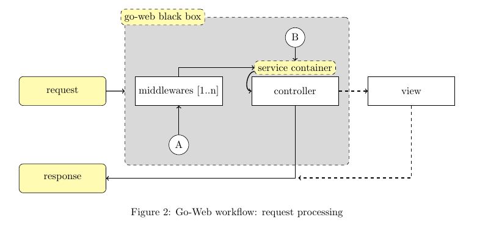

Architecture¶
The architecture of Go-Web uses few components, namely:
- HTTP Kernel
- Service Container
- Controllers
- Middleware
- Views
Go-Web uses the so-called kernel in conjunction with the Service Container, file routes.yml and dependency gorilla/mux to build the map that routes each incoming HTTP request to the appropriate method of a specific controller: after the initialization process, requests will be processed by the Go-Web black box. Figure 1 illustrates this process.

The startup process is executed once and uses reflection so that the service container can inject relevant bits of code into controllers; this approach allows controllers to access any service defined in the service container, like databases or log systems, reducing redundant (“boilerplate”) code. While resolving a route is done by gorilla/mux, the execution of the code associated to the same route is performed (or tunneled) by the Service Container, which injects dependencies into the end-point controller: before going through a controller, a request may be processed by one or more middlewares.
This workflow can be easily understood by looking at figure 2.
After being received by the Go-Web “black box”, a request may follow workflow starting in entry points A or B, figure 2.
Service container¶
The service container (fig. 3) is the tool that manages class dependencies and performs dependency injection through DIG2. By default, Go-Web implements some services, specifically it leverages some libraries like gorilla/mux, gorm and more.

As depicted in figure 3, the service container will register other services if correctly linked in the kernel: the process requires the implementation of such new services and further “registration” by adding them to Services array defined in Go-Web kernel: 〈go-web〉/app/kernel/kernel.go